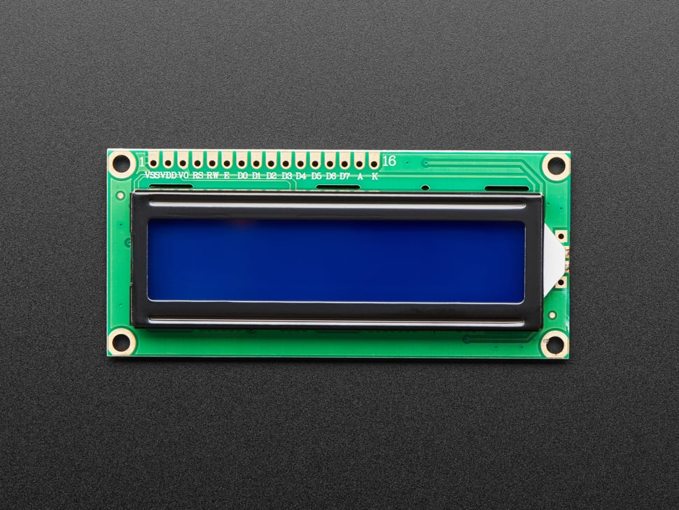

📺 The LCD I2C 16x2 is a smart screen that can show 2 lines of 16 characters each – perfect for messages, values, and menus!
🎯 The "I2C" means it only needs 2 wires (SDA and SCL) instead of 6+ like normal LCDs. That saves a LOT of pins on your Arduino!
🔋 It usually has a blue backlight and white letters. You can control brightness using a tiny potentiometer on the back.
🤓 Super useful in projects like weather stations, clocks, smart homes, and robot interfaces.
